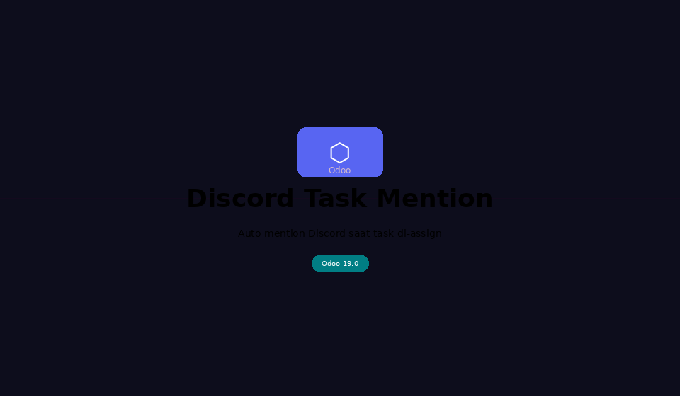
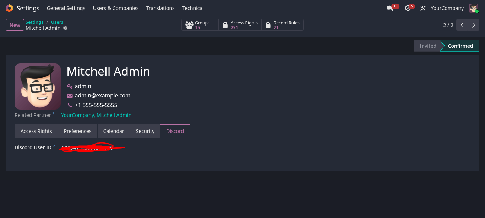
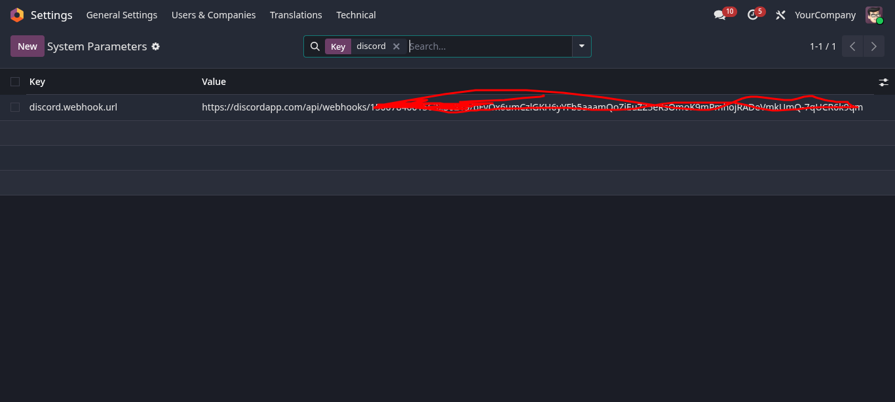
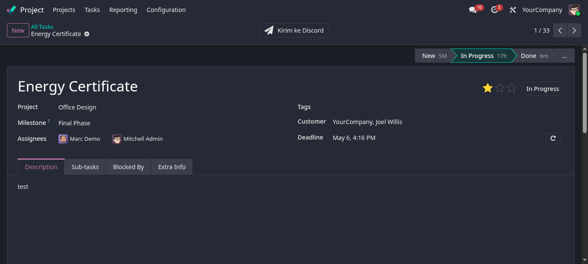

Auto-mention Discord user saat task di-assign — integrasi seamless Odoo 19 × Discord Webhook
Semua yang Anda butuhkan untuk menjaga tim tetap sinkron via Discord
Kirim pesan Discord secara otomatis setiap kali task di-assign ke user, tanpa konfigurasi manual.
Mention langsung user Discord menggunakan ID numerik mereka sehingga notifikasi tidak terlewat.
Dukung banyak assignee sekaligus — semua user yang di-assign di-mention dalam satu pesan.
Simpan webhook Discord di System Parameters Odoo, aman dan mudah diganti kapan saja.
Pesan Discord mencakup nama task, project, deadline, dan prioritas dalam format yang rapi.
Override project.task secara native menggunakan ORM Odoo — tidak perlu cron job.
Tiga langkah konfigurasi, langsung aktif
Di Discord: Edit Channel → Integrations → Webhooks → New Webhook. Copy URL-nya.
Masuk ke Settings → Technical → System Parameters, tambah key discord.webhook.url dengan nilai webhook URL.
Buka Settings → Users → pilih user → tab Discord, isi field Discord Username (contoh: budisantoso atau budi#1234).
Setiap kali field user_ids pada task diubah, webhook otomatis dipanggil.
Lihat alur lengkap dari assign task hingga mention muncul di Discord

Tampilan konfigurasi dan fitur di dalam Odoo


discord.webhook.url

Tampilan pesan yang dikirim ke channel Discord Anda
System Parameters yang digunakan modul ini
| Key | Keterangan | Contoh Nilai |
|---|---|---|
| discord.webhook.url | URL Webhook Discord channel tujuan notifikasi | https://discord.com/api/webhooks/xxx/yyy |
Field yang ditambahkan ke model res.users
| Field | Tipe | Keterangan |
|---|---|---|
| discord_username | Char | Username Discord user, contoh: budisantoso atau budi#1234. |